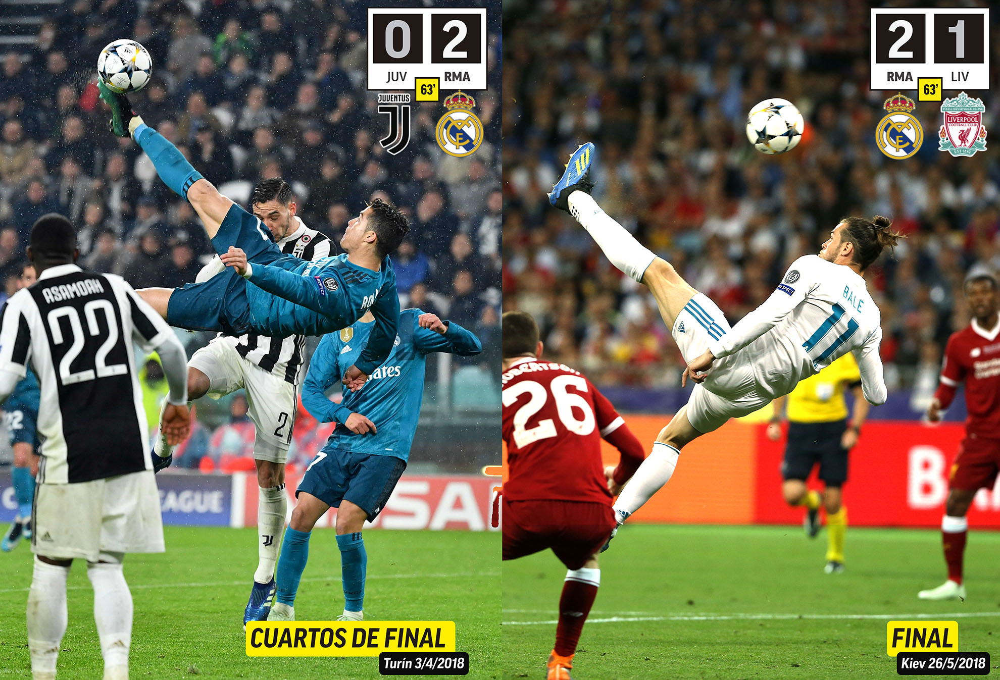
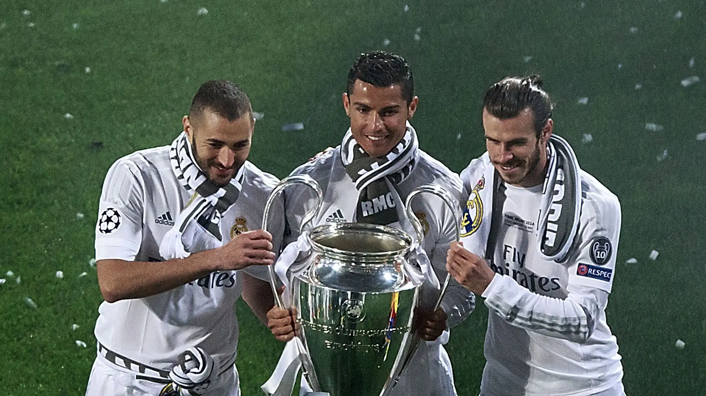

La historia de la BBC del Real Madrid representa una de las etapas más recordadas del fútbol europeo moderno. El nombre BBC nació de las iniciales de Gareth Bale, Karim Benzema y Cristiano Ronaldo, tres delanteros que combinaron velocidad, técnica, inteligencia y una enorme capacidad goleadora. Esta sociedad ofensiva se consolidó durante la década de 2010 y se convirtió en una de las principales armas del equipo dirigido por Carlo Ancelotti y Zinedine Zidane.
Cada integrante de la BBC aportaba cualidades diferentes. Cristiano Ronaldo destacaba por su capacidad goleadora, potencia y ambición competitiva; Karim Benzema sobresalía por su inteligencia, asociación y habilidad para crear espacios; mientras que Gareth Bale aportaba velocidad, fuerza física y un potente disparo. La combinación de estos estilos permitió al Real Madrid construir una delantera capaz de desequilibrar partidos y decidir finales.
Uno de los grandes objetivos de aquella generación fue conquistar la UEFA Champions League. En la temporada 2013-14, el Real Madrid ganó la competición y consiguió su décima Copa de Europa, conocida como “La Décima”. En la final, disputada frente al Atlético de Madrid en Lisboa, el equipo blanco logró empatar en el tiempo añadido gracias a un cabezazo de Sergio Ramos y terminó ganando 4-1 en la prórroga. Bale y Cristiano Ronaldo marcaron en aquella victoria histórica.

La BBC volvió a demostrar su importancia en la temporada 2015-16, cuando el Real Madrid conquistó nuevamente la Champions League frente al Atlético de Madrid. Después de empatar 1-1, el conjunto blanco ganó la tanda de penales y levantó su undécima Copa de Europa. Aunque Cristiano Ronaldo fue decisivo en la definición, el éxito también dependió del trabajo colectivo y de la capacidad del equipo para superar una final muy disputada.
En las siguientes temporadas, el Real Madrid alcanzó una etapa extraordinaria en Europa. Ganó la Champions League en 2016-17 y 2017-18, consiguiendo tres títulos consecutivos y cuatro en cinco temporadas entre 2014 y 2018. En la final de 2017, el equipo venció 4-1 a la Juventus; en 2018, derrotó 3-1 al Liverpool. La BBC formó parte de una generación que combinó talento ofensivo, experiencia y una gran capacidad para competir en los momentos decisivos.
Entre sus momentos más recordados destaca la final de la Champions League de 2018, cuando Gareth Bale entró desde el banquillo y marcó dos goles frente al Liverpool. Su espectacular chilena se convirtió en una de las imágenes más famosas de la historia reciente del torneo. Cristiano Ronaldo también dejó momentos inolvidables durante esta etapa, mientras Benzema fue fundamental para conectar el ataque y ayudar al funcionamiento colectivo.
El ciclo de la BBC fue cambiando con el paso de los años. Cristiano Ronaldo dejó el Real Madrid en 2018 para incorporarse a la Juventus, mientras que Bale y Benzema continuaron durante distintas etapas. A pesar de los cambios, la sociedad ofensiva ya había dejado una huella profunda gracias a sus goles, sus actuaciones decisivas y su participación en una de las épocas más exitosas del club en la Champions League.
Lo que convirtió al Madrid de la BBC en una generación de culto no fue solamente la fama de sus integrantes, sino la manera en que sus características se complementaron. Cristiano Ronaldo, Benzema y Bale representaron tres formas diferentes de atacar: definición, inteligencia y velocidad. Juntos fueron protagonistas de grandes noches europeas y contribuyeron a que el Real Madrid ampliara su legado internacional.
La BBC dejó una enseñanza sobre el valor de combinar talentos distintos para alcanzar un objetivo común. Las grandes figuras pueden decidir partidos, pero necesitan coordinación, esfuerzo colectivo y compañeros capaces de potenciar sus virtudes. El Madrid de la BBC no fue simplemente una delantera de estrellas: fue parte de una generación que convirtió las noches de Champions en escenarios de gloria y escribió una página inolvidable en la historia del fútbol.
© 2026 Equipos de culto: poder, gloria y pasión